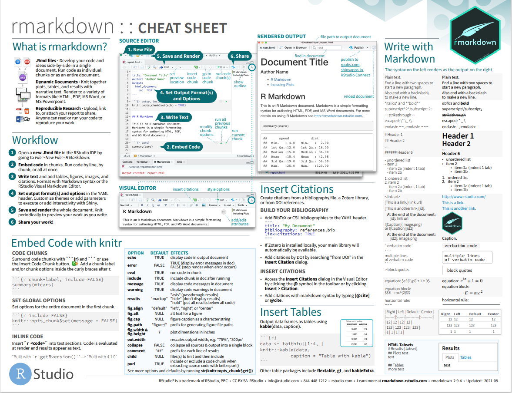
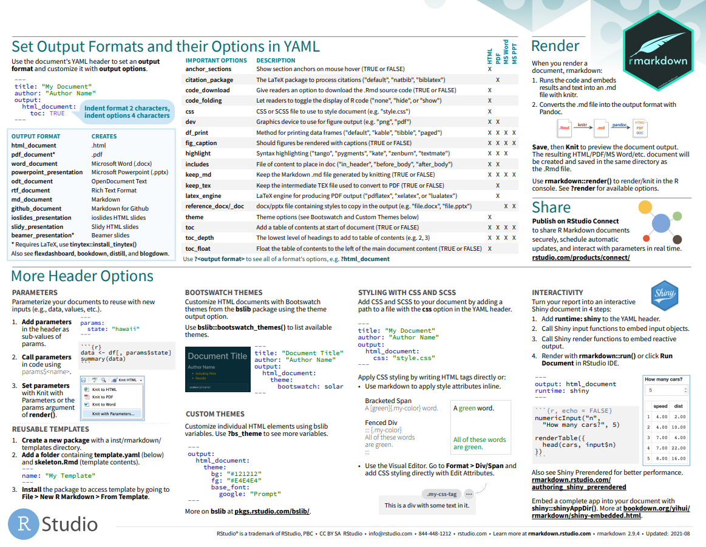

Download and Installation of R and R-Studio
Introduction
This tutorial will teach you how to begin programming with R using RStudio. We’ll install R, and RStudio, a popular development environment for R. We’ll also learn how to install R-package and some key RStudio features to start programming in R on our own.
What is R?
R is one of the most popular open-source statistical computing and visualization environments. It was developed in 1980 based on the S-language, and an open-source community regularly updates the software for a robust, programmable, portable, and open-source computing environment. We can use it to solve complex and sophisticated problems and “routine” analysis without restrictions on access or use.
Download R
We can download R from the R project of a repository CRAN. The version of R to download depends on our operating system. We can also install Microsoft R Open, the enhanced distribution of R from Microsoft. It includes additional capabilities for improved performance and reproducibility and support for Windows and Linux-based platforms.
- Click this link to download the latest stable version of R
- Select a CRAN location (a mirror site) close to you
- Click on the “Download R for Windows”
- Click on the “install R for the first time” link at the top corner of the page
- Click “Download R for Windows” and it will download to local download folder
Install R
Installation instruction of R in Windows and MAC could be found here. Detail Installation steps of Microsoft R Open in different operating systems can be found here.
Windows
- Open Windows Explorer
- Navigate to the directory where the downloaded R.4.2.#-win.exe (the latest version) file is exit.
- Double-click this exe file and follow the instruction as shown in the video below:
Mac OSX
Installing R on Mac OS is similar to Windows. The easiest way is to install it through CRAN by going to the CRAN downloads page and following description as as shown here. In brief, download the .pkg and open the .pkg file and follow the standard instructions for installing applications on MAC OS X.
Ubuntu
Step 1: Update and Upgrade the Ubuntu 22.04
To update and upgrade packages on Ubuntu 22.04, firstly, open up the terminal by pressing “CTRL+ALT+T” and execute the following command:
sudo apt update
sudo apt upgrade
Step 2: Add dependencies
Now, on your Ubuntu 22.04 system, download and install required dependencies. These dependencies are used to execute the R on Ubuntu 22.04. Run the following command for the specified purpose:
sudo apt install dirmngr gnupg apt-transport-https ca-certificates software-properties-common
Step 3: Authenticate the packages
Authenticate the installed packages by writing out the following command:
sudo apt-key adv –keyserver keyserver.ubuntu.com –recv-keys E298A3A825C0D65DFD57CBB651716619E084DAB9
Step 4: Import GPG key
Next, import the GPG key in your system through below command:
wget -O- https://cloud.r-project.org/bin/linux/ubuntu/marutter_pubkey.asc | sudo gpg –dearmor | sudo tee /usr/share/keyrings/cran.gpg
Step 5: Add CRAN repository
After importing the GPG key, you need to add the CRAN repository that is highly recommended for R installation:
echo deb [signed-by=/usr/share/keyrings/cran.gpg] https://cloud.r-project.org/bin/linux/ubuntu $(lsb_release -cs)-cran40/ | sudo tee /etc/apt/sources.list.d/cran.list
sudo apt update
Step 6: Install R through CRAN repository Now, your Ubuntu 22.04 system is ready to install the R language from the CRAN repository. To do so, type the following command:
sudo apt install r-base
sudo apt-get install libcurl4-openssl-dev libssl-dev libxml2-dev liblapack-dev
Step 7: Check R -version
R –version
Open R-Base
After R installation in Windows, double click on the desktop icon or open the program from START to run R. R will be open as a Console window.

You can work in the console and the command line. However, the command line can be pretty daunting to a beginner. It is better to work in R Editor. First, you must create a New script from File menu. Any code you run in R-script output will be displayed in the console window. You can save all your R codes as an R script file and output in the console as an R-Data file.
Integrated Development Environment for R
R can be run in the command line and graphical user interfaces in integrated development environment (IDE). Below are the best programming IDE for R:
Download and Installation RStudio
RStudio is one of the best integrated development environment (IDE) for R that includes a console, a terminal syntax-highlighting editor that supports direct code execution, as well as tools for plotting, history, debugging and workspace management. RStudio Desktop and RStudio Server for Windows, Mac, and Linux are open sources.
RStudio is now Posit. First, you have to download the latest version of RStudio according to your operating system from here.
For windows user, and just run the installation file and it normally detects your latest installed R version automatically. If you want to do some extra configuration, you need follow some steps which can be found here
For installation instruction of R and RStudio in Mac OS could be found here.
Installing R Studio on Ubuntu could be found here
We may open RStudio just double click Rstudio icon on your Desktop or on the task bar. The RStudio interface has four main panels:
Console: where you can type commands and see output.
Script editor: where you can type out commands and save to file.
Environment/History: environment shows all active objects and history keeps track of all commands run in console.
Files/Plots/Packages/Help etc.

R Packages or Libraries
R Packages are collections of R functions, data, and compiled code in a well-defined format. The directory where packages are stored is called the library. We can install any R ‘package’ or multiple package directly from the console, using r-script and GUI (Tools > Install Packages) through internet.
Use install.packages() function in your console or in a script:
install.packages(“raster”, dependencies = TRUE)
For multiple packages:
install.packages(c(“raster”,“gstat”), dependencies = TRUE)
If we want see content of any library, just use help() function or package specific:
library(help=spatial)
R Markdown
Markdown is a lightweight markup language for creating formatted text using a plain-text editor. Markdown is widely used in blogging, instant messaging, online forums, collaborative software, documentation pages, and readme files (wikipedia).
R Markdown is an excellent platform for data analysis and turns it into a high-quality document, webpage, dashboard, and presentation. It is reproducible and supports multiple languages, including R, Python, and SQL. R Markdown supports dozens of static and dynamic output formats, including HTML, PDF, MS Word, Beamer, HTML5 slides, Tufte-style handouts, books, dashboards, shiny applications, scientific articles, websites, and more. (R Markdown)
You can use a single R Markdown file to i) save and execute code and ii) generate high quality reports that can be shared with an audience.
A brief overview could be found here:
For a brief a brief tutorial, please visit here


Quarto
Like, R Markdown, Quarto is an open-source scientific and technical publishing system built on Pandoc, a universal document converter. It creates dynamic content with Python, R, Julia, and Observablefor publishing high-quality articles, reports, presentations, websites, blogs, and books in HTML, PDF, MS Word, ePub, and more.
Like R Markdown, Quarto uses Knitr to execute R code. So it can render most existing Rmd files without modification. The difference between R Markdown and Quarto is related to output formats. Quarto includes many more built-in output formats (and more options for customizing each format). Quarto also has native features for particular project types like Websites, Books, and Blogs (rather than relying on external packages).
To run Quarto on RStudio, you must install it in your system. You can download it from here according to your operating system. After installation, you need to install the quarto package to render documents from the R console.
install.packages(“quarto”)
quarto::quarto_render(“hello.qmd”)
Andy Field have series of YouTube video tutorials related to Quarto. Link of these are in below: